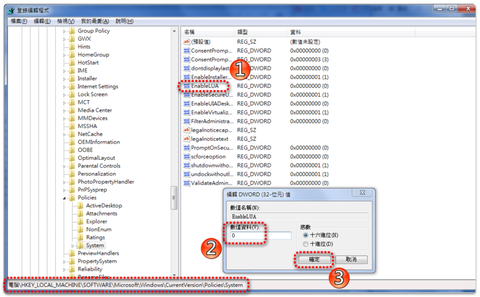

如果用戶端的電腦作業系統為Win8/10(64位元)，因為當初安裝時一開始創建之系統管理員，也並非為Administrator管理員，所以只要在「Progrsm Files」資料夾新增檔案，都必須「以管理員身分執行」，這樣顯得不是很方便。
請使用者透過以下「完整關閉 Windows 8/10 UAC功能」步驟，設定您的用戶帳號為「完全控制」權限，開啟「Progrsm Files」資料夾權限之後，這樣才能正常使用「ACADAdviser外掛程式」。
※請先關閉目前開啟中的應用程式。
步驟1：「控制台」→「使用者帳戶」→「使用者帳戶」→「使用者帳戶控制設定」→「不要通知」→「確定」。

步驟2：按下「視窗鍵」+「R」
步驟3：輸入「regedit」→「確定」。

步驟4：找尋「HKEY_LOCAL_MACHINE\SOFTWARE\Microsoft\Windows\CurrentVersion\Policies\System」路徑。
步驟5：請將「EnableLUA」值修改成「0」，即可完全關閉UAC功能。

步驟6：重新開啟電腦